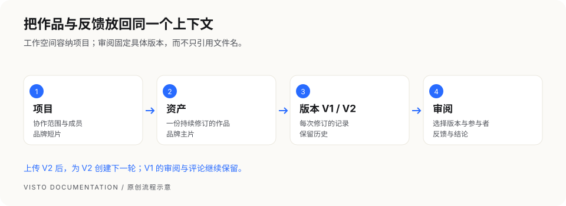

文档首页/开始使用
先理解 Visto
Visto 在你控制的电脑或服务器上运行，用浏览器进入工作空间。它把项目、媒体文件、不同版本、审阅反馈和分享记录放在同一条协作流程里。存储可以位于部署主机，也可以由 Owner 连接 WebDAV 或 S3 兼容服务。
“本地优先”意味着你决定数据部署在哪里。选择远程存储、配置外部通知或开放远程访问后，相关数据仍会经过你启用的服务和网络。
五个最常用的概念
| 概念 | 用来做什么 | 例子 |
|---|---|---|
| 工作空间 | 容纳账号、项目、全局设置和基础设施 | 一个制作团队 |
| 项目 | 划定协作范围、成员和文件保存位置 | 品牌短片 · 10 月交付 |
| 媒体 / 资产 | 一份持续修订的作品或素材 | 品牌短片主片 |
| 版本 | 保留同一资产的每次上传结果 | V1 初剪、V2 调色、V3 确认版 |
| 审阅 | 围绕选定版本发起的一轮反馈与结论 | 第一轮导演审阅 |


图解： 一个项目可以有多个资产；一个资产可以有多个版本；审阅引用选定的版本。上传新版以后，旧审阅仍保留原来审阅的版本，下一轮应明确选择新版。
按身份选择阅读路线
| 你的身份 | 先读哪些章节 | 你最需要知道的事 |
|---|---|---|
| 安装维护者 | 安装准备 → 对应平台安装 → 媒体运行时 → 备份恢复 | 主机操作在部署机器执行，需要相应系统权限 |
| Owner | 首次设置 → 存储 → 成员权限 → 网络安全 | 管理全局基础设施，不要把 Owner 密码当团队共享密码 |
| 项目主管 | 创建项目 → 成员权限 → 审阅 → 归档 | 项目成员关系和具体权限决定协作边界 |
| 项目成员 | 上传素材 → 版本 → 审阅 → 通知 | 先进入正确项目，再上传和创建审阅 |
| 外部审阅者 | 外部审阅指南 | 使用分享链接和访问码，按开放权限查看、评论或下载 |
适用与限制
本手册介绍 Visto Server 浏览器工作台。支持的安装包和下载开放情况请看下载与版本说明。